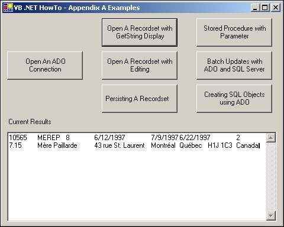

Working with the ADO Recordset Object
The central object in the ADODB object model is the Recordset object. You will be using this object when you want to manipulate records one at a time or bring back a set of records with which to work. With ADO, when you declare the type of variable you are going to use, you can instantiate it at the same time with the New keyword.
Displaying Records by Using GetString
For debugging purposes, you can also dump the whole recordset into a string variable for display. Listing A.4 shows you how to do this.
Listing A.4 basRecordsetExamples.vb: Opening and Retrieving a Recordset for Display
Sub OpenRecordsetWithGetStringDisplayExample(ByVal txtResults As TextBox)
Dim cnn As New ADODB.Connection()
Dim rstCurr As New ADODB.Recordset()
OpenNorthwindADOConnection(cnn)
rstCurr.Open("Select * from Orders where OrderDate = '06/12/97'", cnn,
ADODB.CursorTypeEnum.adOpenForwardOnly)
txtResults.Text = rstCurr.GetString
rstCurr.Close()
End Sub
Using the OpenNorthwindADOConnection subroutine listing in Listing A.3, a connection object is referenced, and that is passed to the Open method of a Recordset object.
Tip
 |
Notice that the cursor type returned will be ADODB.CursorTypeEnum.adOpenForwardOnly. Because all that is happening is the data being dumped to a string, using this cursor type makes sense. This will give you the best performance. Some other choices include adOpenDynamic, adOpenKeyset, adOpenStatic, and adOpenUnspecified.
|
You can run this example by clicking on the button labeled Open a Recordset with GetString Display on the main form. Figure A.5 shows what you will see.

Editing and Updating Records
You can use several methods to perform editing and updating of records in code.
Unlike the last section in which you could open the recordset as a Forward Only type cursor, you will want to open it as a Dynamic type cursor. You can see this in Listing A.5.
Listing A.5 basRecordsetExamples.vb: Opening and Retrieving a Recordset for Display
Sub OpenRecordsetWithEditingExample(ByVal txtResults As TextBox)
Dim cnn As New ADODB.Connection()
Dim rstCurr As New ADODB.Recordset()
Dim fldCurr As ADODB.Field
Dim strTemp As String
OpenNorthwindADOConnection(cnn)
rstCurr.Open("Select * from Orders where OrderDate = '06/12/97'", cnn,
ADODB.CursorTypeEnum.adOpenDynamic, _
ADODB.LockTypeEnum.adLockOptimistic)
With rstCurr
Do Until .EOF
strTemp = strTemp & " Old Field Value: " & _
.Fields("ShippedDate").Value
'-- Updating the release date
.Fields("ShippedDate").Value = DateAdd(DateInterval.Day, 5, _
.Fields("ShippedDate").Value)
.Update()
strTemp = strTemp & " New Field Value: " & _
.Fields("ShippedDate").Value & vbCrLf
.MoveNext()
Loop
End With
txtResults.Text = strTemp
rstCurr.Close()
End Sub
You can see that the Update method is used after assigning the value that you want to the field you specify. You could have specified other fields to be updated as well.
Note
 |
Notice that when updating individual fields in the recordset, the Value property is specified to be updated. You didn't have to do this in VB 6.0 or VBA, but .NET doesn't allow for default properties, which the Value property is.
|
You don't have to explicitly use an Edit method; in fact, you won't find one like you could in previous editions. To add a new record, you must use the AddNew method before updating field values. To delete a record, you use the Delete method.
One last thing to discuss about recordsets is how to persist, or save a recordset to disk.
Persisting a Recordset
This example will open up two recordsets: one from the Orders table, and one from a file created from the Orders table called OrdersForDate.rst.
The code, shown in Listing A.6, opens the Orders table for a specific date and uses the GetString method to stash the contents to the results text box. The routine then saves that recordset using the Save method, and passes the adPersistADTG format enumerator. You could save the recordset as XML by using adPersistXML. The code opens the file into a recordset and prints it by saving it to the results TextBox control.
Listing A.6 basRecordsetExamples.vb: Persisting a Recordset to Disk
Sub PersistingARecordset(ByVal txtResults As TextBox)
Dim cnn As New ADODB.Connection()
Dim rstOrig As New ADODB.Recordset()
Dim rstPersist As New ADODB.Recordset()
Const adCmdFile As Long = 256
OpenNorthwindADOConnection(cnn)
'-- Open forward only and readonly since we are just saving it to disk.
rstOrig.Open("Select * from Orders where OrderDate = '06/12/97'", cnn,
ADODB.CursorTypeEnum.adOpenStatic)
txtResults.Text = "Original Records : " & vbCrLf & rstOrig.GetString
'-- Delete any existing old copies.
' If you don't, you will get an error.
On Error Resume Next
Kill("OrdersForDate.rst")
'-- Create the persistent recordset in the applications directory
On Error GoTo 0
rstOrig.Save("OrdersForDate.rst", ADODB.PersistFormatEnum.adPersistADTG)
cnn = Nothing
rstOrig = Nothing
' Open the persisted recordset
rstPersist.Open("OrdersForDate.rst", Options:=adCmdFile)
txtResults.Text = txtResults.Text & vbCrLf & vbCrLf & _
"Persisted File : " & vbCrLf & rstPersist.GetString
rstPersist.Close()
End Sub
That's all there is to it. You will find that you can do most other things with recordsets using VB .NET that you have been able to do in other languages. Now take a look at another common task that you must do if you are using ADO with Visual Basic .NET: calling stored procedures.